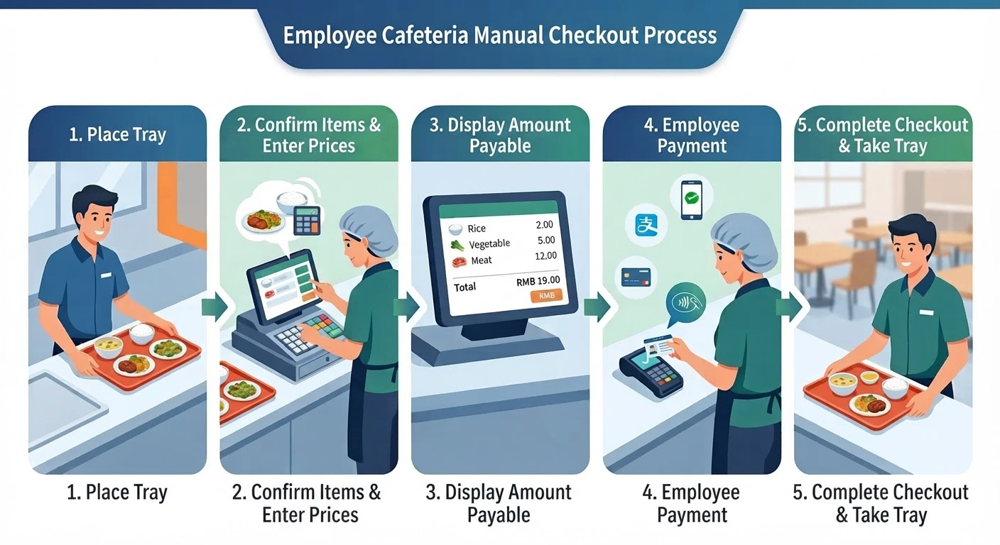
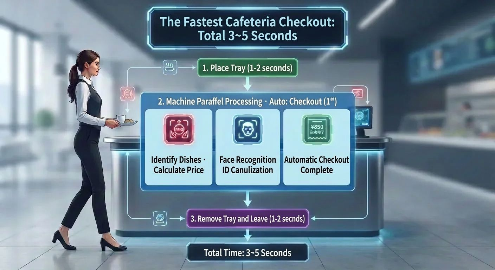
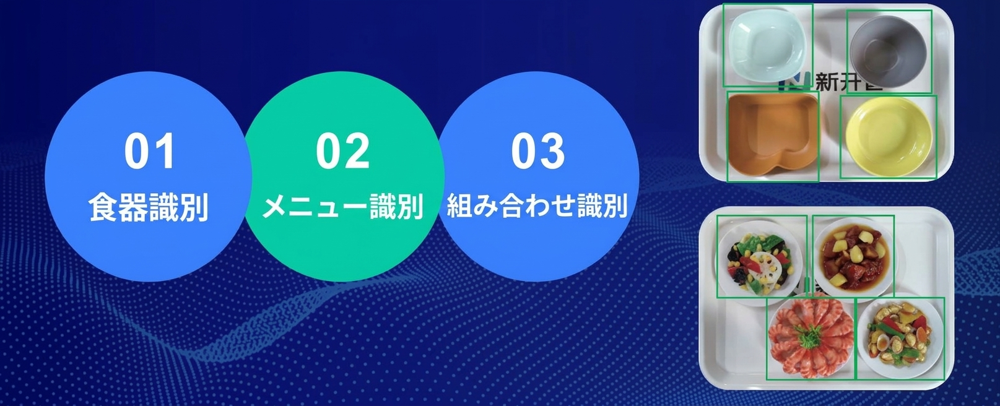

What you'll learn in this article - How a cafeteria AI register works — what makes it different from a conventional register - The 3-step checkout flow of simply placing your tray - The difference between the two recognition modes (dish recognition vs. food recognition) - The four changes a cafeteria AI register brings - The equipment and flow needed for introduction
"A cafeteria AI register sounds convenient, but how does it actually work?"
Recently, the term "AI register" has been heard more and more in corporate and school cafeterias. Yet many people find it hard to picture what specifically differs from a conventional barcode register or POS register.
In this article, we explain — in a way that is easy even for first-timers — everything from how a cafeteria AI register basically works to how it transforms cafeteria operations once introduced.
The basics of a cafeteria AI register — the decisive difference from a conventional register
The checkout flow of a conventional register
At a conventional cafeteria register, checkout proceeds as follows.

- The user carries the tray to the register
- Staff visually check the items and either enter them into the POS register manually or scan a barcode
- The amount is calculated and shown to the user
- The user pays (cash / IC card)
This flow involves "human eyes" and "human hands." At peak times, staff processing speed becomes the bottleneck and queues form. Misreading items and entry errors cannot be avoided.
The checkout flow of an AI register
With a cafeteria AI register, an AI camera completely replaces the eyes and hands of staff.
- The user places the tray in the checkout area
- The AI camera photographs the food and automatically determines the items and quantities by image recognition
- The total amount is displayed on the screen
- The user pays (facial recognition / QR / IC card)
Because the process of "human" judgment becomes zero, checkout speed, accuracy, and stability all improve dramatically.
| Comparison item | Conventional register | Cafeteria AI register |
|---|---|---|
| Item determination | Staff visual check | AI camera image recognition |
| Amount calculation | Manual entry / barcode | AI automatic calculation |
| Checkout time | 30–60 seconds | 1–2 seconds |
| Need for staff | 1–2 per station | Not needed (self-service) |
| Error rate | 3–5% | 0.01% or less |
The mechanism illustrated — just three steps of placing your tray
The checkout flow of a cafeteria AI register is surprisingly simple.

STEP 1: Place the tray in the checkout area
The user simply places the tray holding the food in the designated area of the checkout stand. No special operation is needed at all.
STEP 2: The AI camera photographs and recognizes the food
A high-resolution AI camera (5 megapixels, monocular) mounted on the checkout stand instantly photographs the food on the tray. The image recognition algorithm analyzes the shape, color, size, and plating pattern of the food and determines the items and quantities.
This recognition process completes within 0.5 seconds. Even when multiple items are on the tray, they are recognized all at once, so the user's waiting time is nearly zero.
STEP 3: Pay and finish
Once the recognition results and total amount are displayed on the screen, the user pays with their preferred payment method.
| Payment method | Mechanism | Features |
|---|---|---|
| Facial recognition | Identity verification with an infrared dual camera (2 megapixels) | Hands-free OK. Equipped with anti-spoofing function |
| QR code | Supports both forward and reverse scanning | Easy with a smartphone |
| IC card | Contactless M1/CPU, ISO/IEC14443 compliant | Employee ID cards can be used as-is |
From placing the tray to completing checkout, the whole process takes about 1–2 seconds. The AI checkout stand runs a food recognition camera and a facial recognition camera simultaneously, processing food recognition and identity verification in parallel, so checkout completes in as little as one second. Payment finishes in 1/30 of the time of a conventional register.
Two recognition modes — choose to match your cafeteria's operation
A cafeteria AI register has two recognition modes that can be selected according to how the cafeteria is operated. This is a unique strength of the AI register, a design that flexibly accommodates the circumstances of each cafeteria.

Dish recognition mode — determined by the shape and color of the dish
| Item | Details |
|---|---|
| Recognition target | Shape, color, and size of the dish |
| Recognition accuracy | 99.99% or higher |
| Dish constraint | Dedicated dishes required |
| Merit | Highest accuracy. Unaffected by portion size or variation in plating |
| Suited cafeteria | Cafeterias where the menu-to-dish combination is fixed |
Because items are determined by the pattern of the dish's shape and color, the greatest strength is that recognition accuracy is maintained even if the appearance of the food changes. Even in cases such as "the portion of curry differs by person" or "the color of a hamburger's sauce varies slightly by day," it achieves stable recognition.
Food recognition mode — determined by the food image itself
| Item | Details |
|---|---|
| Recognition target | Image of the food (shape, color, texture) |
| Recognition accuracy | 99% or higher |
| Dish constraint | None (ordinary dishes are OK) |
| Merit | Zero dish-replacement cost. Low introduction hurdle. Because the number of daily menus is limited, accuracy is nearly 100% in actual operation |
| Suited cafeteria | Cafeterias with a rich variety of daily-changing menus, or facilities where swapping dishes is difficult |
The biggest feature of this mode is that you can use ordinary dishes as-is. Since no dish-replacement cost is incurred, initial investment is kept to a minimum.
When adding a new menu, too, the AI learns automatically just by photographing the food on the terminal. Even in cafeterias with a rich variety of daily-changing menus, the registration work completes in a few minutes during the morning prep.
💡 Which should you choose? - Dishes can be swapped → Dish recognition mode (highest accuracy) - Want to use existing dishes as-is → Food recognition mode (easy to introduce) - If in doubt → try both modes and compare in an actual free PoC
The four changes a cafeteria AI register brings
Introducing a cafeteria AI register is not merely "swapping out the register." It has an impact that changes the very mechanism of cafeteria operation.
Change (1): A dramatic improvement in checkout speed
The most obvious change is the reduction in checkout time.
| Indicator | Conventional | After AI register introduction |
|---|---|---|
| Checkout time/person | 30–60 seconds | 1–2 seconds |
| Queue at peak times | 20 minutes or more | Almost eliminated |
Because one AI register has roughly the processing capacity of about three conventional registers, there are cases where the number of checkout stands themselves can be reduced. With queues eliminated, the quality of employees' lunch breaks improves significantly.
Change (2): Eliminating human error
The misreading of items, mis-keying of amounts, and calculation errors that could not be avoided with manual checkout become nearly zero with the introduction of AI.
Recognition accuracy is 99.99% in dish recognition mode and 99% in food recognition mode. However, in an actual cafeteria the number of daily menus is limited to around 10–30 items, so accuracy is nearly 100% in real operation. Even in the rare event of a misrecognition, it can be corrected on the checkout screen, and an anomalous-order detection function from the management terminal is also included. Claims and troubles over checkout are greatly reduced.
Change (3): Data-driven cafeteria management
Each time the AI register processes a checkout, the following data accumulates automatically.
| Data | Application scene |
|---|---|
| Sales volume by menu | Grasping popular menus; improving or replacing unpopular ones |
| Number of users by time slot | Considering measures to spread out peaks; optimizing staff placement |
| Daily and monthly sales trends | Budget management; improving accuracy of prep-volume forecasting |
| Individual consumption history | Providing nutrition analysis reports; personalized recommendations |
This data can be checked in real time from the dashboard on a PC management terminal. It enables a break away from handwritten ledgers and Excel management, allowing evidence-based decision-making.
Change (4): Higher user satisfaction
Not only does checkout become faster, but the cafeteria experience itself changes for the user.
- Elimination of waiting time → a stress-free lunch
- Diverse payment methods → with facial recognition, dining is possible hands-free
- Personalized recommendations → recommended-menu display based on individual tastes and consumption history
- Nutrition analysis → visualizing your own dietary balance; raising awareness of health management
Employees who felt "going to the cafeteria is a hassle" come to "want to go to the cafeteria" — the AI register also contributes to raising the cafeteria's utilization rate.
What you need to introduce it — surprisingly simple
Hearing "AI," you might imagine a large-scale system introduction, but what a cafeteria AI register needs is surprisingly simple.
Required equipment
| Equipment | Details |
|---|---|
| AI checkout stand | E716 (15.6-inch dual-screen, compact type) or E718 (21.5-inch large-screen type) |
| Power | AC220V |
| Network | Wired LAN (10/100Mbps) or Wi-Fi (2.4GHz) |
No server is required. Because the AI engine is an edge-type design built into the checkout stand itself, there is no need to prepare a separate server. It works simply by placing the checkout stand in the existing register space and connecting power and network.
Management is operated via the web from a PC management terminal
Day-to-day operational management is completed on a management terminal accessed from a PC web browser.
- Registering and editing menus (automatic learning via photography)
- Price settings and meal-count settings
- Viewing sales reports and management analytics
- Monitoring equipment operating status
No dedicated software installation is needed. Because the management screen is designed with a simple UI, even staff who are not IT-savvy can operate it intuitively.
Introduction flow — from PoC to live operation in the shortest path
| Phase | Details | Rough duration |
|---|---|---|
| (1) Hearing | Grasping the cafeteria's scale, menu composition, and challenges | 1–2 days |
| (2) Proposal | Proposing the optimal equipment configuration, recognition mode, and installation plan | 3–5 days |
| (3) Free PoC | Installing the equipment in an actual cafeteria for test operation | 1–2 weeks |
| (4) Menu registration | Image registration and AI learning for all menus | 1–2 days |
| (5) Live operation | Start of full operation + continuous support | — |
💡 The PoC (proof of concept) is completely free. We handle everything — equipment delivery, installation, menu registration, and collection. You can verify "whether it is effective in a real cafeteria" at zero risk.
Frequently Asked Questions (FAQ)
Q. What happens if the AI checkout stand breaks down?
A. We monitor the operating status of each checkout stand in real time from the management terminal. If an anomaly is detected, an alert is issued and we respond quickly. Even in the unlikely event of a failure, operations can continue on the other checkout stands.
Q. Can the AI recognize menus even when there are many items?
A. Yes. AI image recognition supports identifying several hundred or more items. Adding a new menu is done simply by taking a photo on the terminal, which is learned instantly, so a large number of items never becomes an operational burden.
Q. What if a user does not accept the AI's judgment result?
A. The order can be corrected on the checkout screen. The user can amend items via on-screen controls, and abnormal orders can also be detected and corrected from the management terminal side.
Q. Which is better, this or the RFID method?
A. It depends on the cafeteria's characteristics. An AI register suits cafeterias with many daily-changing menus where swapping dishes is difficult. The RFID method suits large cafeterias centered on fixed menus where dishes can be swapped. See the comparison article for details.
Summary — the AI register is the "next standard" for cafeteria checkout
The cafeteria AI register is a smart device that automatically identifies food through AI-camera image recognition and dramatically improves the speed, accuracy, and data utilization of checkout.
| Features of the AI register | Details |
|---|---|
| Mechanism | Photograph with camera → AI image recognition → automatic checkout |
| Checkout time | 1–2 seconds (1/30 of conventional) |
| Recognition accuracy | 99%–99.99% |
| Dish constraint | Not needed in food recognition mode |
| Server | Not needed (edge-type design) |
| Payment methods | Facial recognition, QR, IC card |
The era in which barcode registers and POS registers supported cafeteria checkout is quietly coming to an end. The AI register is a new standard for cafeteria checkout that simultaneously achieves cost reduction, operational efficiency, and higher user satisfaction.
First, experience the capabilities of the AI register with a free PoC.
📞 Apply for a Free PoC
AI image recognition, RFID, and weighing checkout — test the method best suited to your cafeteria in a real environment.
We handle equipment delivery, installation, and collection. No cost involved.